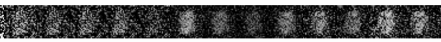

Simple MNIST GAN using TensorflowJS
Hand-written digit generation using Generative Adversarial Network. A simple TensorflowJS implementation that clocks in at less than 100 lines of code.
| Early stages: |  |
| Getting better: |  |
| Later still: |  |
Click Train to train for (an additional) 5) epochs. Click Load weights to restore pre-trained weights for the Generator. Click Sample image to generate a sample output using the current weights. The network should start to converge after 15-20 epochs.
Loading resources...this may take a few seconds